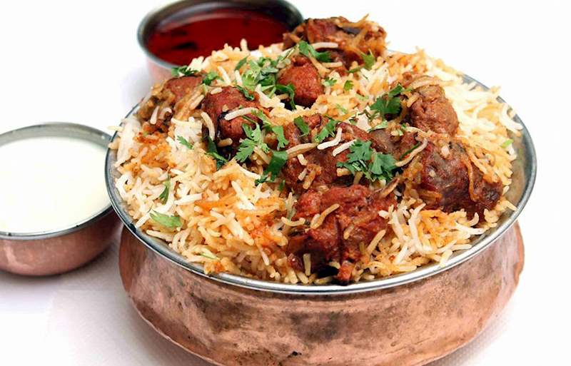

Biryani

Description
Biryani is a South Asian dish that typically consists of layers of spiced rice and either vegetables, meat, or both. The dish is often cooked with fragrant spices such as cumin, coriander, and cardamom, and may also include ingredients like saffron, raisins, and nuts. Biryani is often served with yogurt or raita, and may also be accompanied by various condiments such as chutney or pickles. It is a flavorful and aromatic dish that is popular throughout South Asia and has many regional variations.
Ingredients
- 2 cups basmati rice
- 1 lb boneless, skinless chicken thighs or breasts, cut into small pieces
- 1 cup plain yogurt
- 2 medium onions, thinly sliced
- 3 medium tomatoes, chopped
- 3 cloves garlic, minced
- 1 inch piece of ginger, minced
- 3-4 green chilies, slit lengthwise
- 1/4 cup cooking oil or ghee
- 1 cinnamon stick
- 2 bay leaves
- 6-8 green cardamom pods
- 6-8 whole cloves
- 1 tsp cumin seeds
- 2 tsp coriander powder
- 1 tsp cumin powder
- 1 tsp turmeric
- 1 tsp chili powder
- 1 tsp salt
- 1/2 tsp black pepper
- A pinch of saffron (optional)
- 2 tbsp warm milk (optional)
- 1/4 cup chopped fresh cilantro leaves (coriander leaves)
- 1/4 cup chopped fresh mint leaves
- 1/4 cup fried onions (optional)
Steps
- Wash the rice thoroughly and soak it in cold water for 30 minutes.
- In a large mixing bowl, mix the chicken pieces with yogurt, garlic, ginger, green chilies, 1 tsp salt, and 1/2 tsp black pepper. Cover and marinate for at least 30 minutes (or overnight in the refrigerator for more flavor)
- In a large pot or Dutch oven, heat the oil or ghee over medium-high heat. Add the whole spices (cinnamon stick, bay leaves, cardamom pods, cloves, and cumin seeds) and sauté for 30 seconds or until fragrant.
- Add the sliced onions and sauté until golden brown (about 10-12 minutes). Add the chopped tomatoes and cook for another 5-7 minutes, or until the tomatoes are soft and pulpy.
- Add the marinated chicken (along with the marinade) and cook for 10-12 minutes, or until the chicken is cooked through.
- Drain the soaked rice and add it to the pot along with 4 cups of water. Add coriander powder, cumin powder, turmeric, chili powder, and 1 tsp salt. Stir well.
- Bring the mixture to a boil, then reduce the heat to low and cover the pot with a tight-fitting lid. Cook for 15-20 minutes, or until the rice is fully cooked and the liquid has been absorbed.
- In a small bowl, soak a pinch of saffron (if using) in warm milk for 5-10 minutes.
- Once the rice is cooked, remove the pot from heat and let it sit covered for 10-15 minutes. Then, fluff the rice with a fork and sprinkle the saffron-infused milk (if using) over the top.
- Garnish with chopped cilantro leaves, mint leaves, and fried onions (if using). Serve hot with raita or chutney on the side.